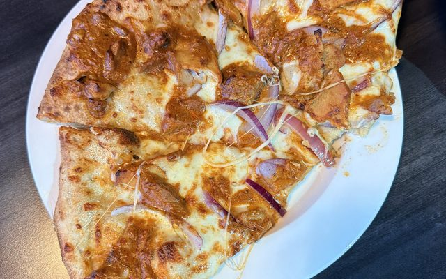

Every UMass Dining menu
All the dining halls, cafés and food courts, with nutrition facts for every dish.
Snap your meal. It works out what’s on the plate and how much, checks the campus dining menu first, and shows the nutrients as honest ranges.
Works in your phone’s browser. No app store download.

Nutrients come from the campus menu first and USDA as a backup, never from the AI.
Why MealScholar
Eight choices that keep the numbers honest and the app easy to check.
See how it worksIt estimates how much of each food is there as a low, likely and high amount, so you can see how sure it is.
The AI names the foods and works out how much is there. The nutrients come from real data and plain arithmetic.
Food from the dining halls is checked against the campus menu and its own nutrition facts: 2,236 dishes, refreshed every hour.
If a photo is unclear, it asks you one thing, then recomputes.
You just take the photo. It works out the amounts itself, and you can swap a food if it got one wrong.
Every meal with the day’s totals and % Daily Value. Weekly averages count only the days you logged.
Anything that isn’t on the campus menu is matched to USDA FoodData Central’s 13,648 foods.
It works in the browser on any phone. Add it to your Home Screen if you like.
How it works
Five steps, shown with a real lunch photo.
Take a photo of your plate. That’s all you do.
The AI names each food and works out how much is there, as a low, likely and high amount. No weighing.
Sized against the dinner plate · checked against today’s campus menu, then USDA
If the photo is unclear, it asks you one thing, then recomputes.
If the food is on today’s campus menu, the nutrients come from the dining hall’s own nutrition facts. If not, from USDA FoodData Central. The AI never outputs nutrient numbers.
Campus menu first · USDA as a backupIf it got a food wrong, swap it with one tap. Then log it to your day.
Screen recordings
One photo becomes foods, grams and nutrient ranges.
When a photo is unclear, it asks once and recomputes.
Swap a food if it got one wrong, then check the day’s totals.
What it tracks
Calories, protein, carbs, fat, fiber, sugar, sodium and cholesterol come from the campus menu when the food is on it. Vitamins and minerals come from USDA and are labeled as estimates. % Daily Value is shown where one exists.
Daily Value is the amount US food labels use to work out % DV. It is not a goal.
The data
2,236
dishes on the campus dining menus, each with its own nutrition facts. Every dining hall, café and food court menu, refreshed every hour.
MealScholar works in the browser on any phone. Open the link, snap your meal, see the ranges.
Open on your phoneOn a computer? Scan this with your phone’s camera to open MealScholar there.
On campus
MealScholar is piloting with students at UMass Amherst, starting with every UMass Dining menu.
All the dining halls, cafés and food courts, with nutrition facts for every dish.
The AI looks at your photo, names each food and works out how much is there as a low, likely and high amount. It never outputs nutrient numbers. Those come from the campus menu’s nutrition facts when the food is on it, and from USDA FoodData Central otherwise.
A photo can’t show exactly how much food is on the plate, so one precise number would be a guess. The range shows how sure the estimate is.
No. You just take the photo. It works out how much is on the plate by itself.
Swap it for the right food with one tap, from the campus menu or USDA.
No. It works in the browser on any phone. On iPhone or Android you can add it to your Home Screen from the browser’s share button or menu.
No. MealScholar gives you information, not medical advice. Any goal is one you choose, and it never gives insulin or carb dosing advice.
Yes. It has every dining hall, café and food court menu on campus with nutrition facts, refreshed every hour.
Open MealScholar in your phone’s browser and snap a photo.
mealscholar.mannava.org